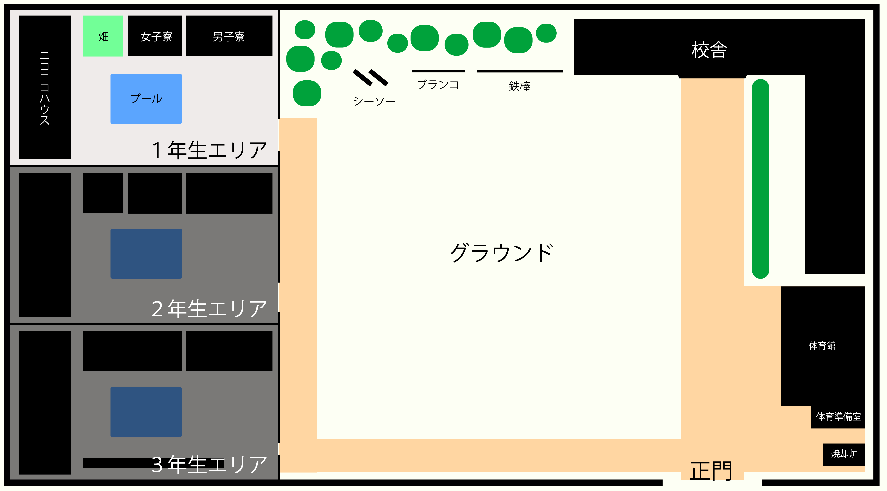
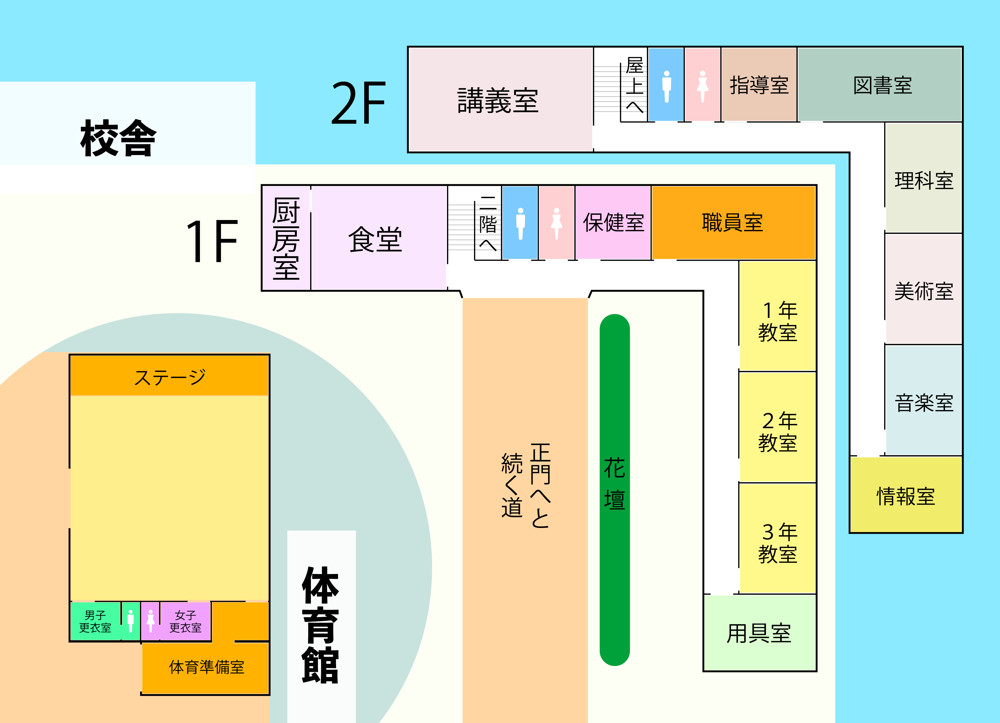
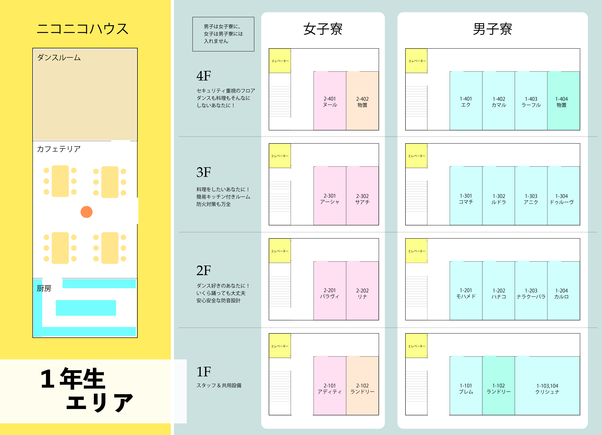

学園マップ-全体

学園マップ-校舎/体育館

校舎1F
〔厨房室〕
シェフが一人だけ、黙々とナンを練っている。
>>シェフ
〔食堂〕
バイキング形式で食事を楽しめるらしい。
〔保健室〕
養護教諭が不在なのか、今は鍵がかかっていて入れない。
〔職員室〕
数人の先生が残って作業している。
>>キーラック
>>プレム・アイアンガーの机
〔1年教室〕
シンプルで清潔な教室だ。教壇と人数分の机と椅子の他は特に何もない。マジで何もない。
〔2年教室〕
誰もいない。鍵がかけられている。
散らかっていて窓や壁にヒビが入っている。元気のいい生徒がいるらしい。
〔3年教室〕
誰もいない。鍵がかけられている。
何やら自由に改造されており、天井にハンモックが吊り下げられている。
〔用具室〕
鍵がかけられていて入れない。
〔花壇〕
名前が分からないがなんだか綺麗な花が咲いている。ほのかにスパイスの香りがする
〔運動場〕
とても広い。カバディができそう。
今は無料開放されているらしく、近所のおっちゃんたちがクリケットを楽しんでいる。
校舎２F
〔講義室〕
大きなスクリーンが吊り下げられている。
>>DVDデッキ
>>講義室の棚
〔指導室〕
鍵がかかっていて入れない。窓はなく、中を覗くこともできないようだ。
〔図書室〕
様々な言語の本が揃えられている。英語書籍が一番多いみたいだ。
>>本を探す
>>司書
〔化学室〕
鍵がかかっていて入れない。
〔美術室〕
鍵がかかっていて入れない。
〔音楽室〕
鍵がかかっていて入れない。
窓から覗き込むと壁に大きなポスターが貼ってあるのが見える。あれはもしかして…
>>音楽室のポスター
〔情報室〕
20台の最新型のパソコンが並んでいる。この部屋の管理人らしき人が何やら作業をしているようだ。
>>コンピューター
>>情報室の管理人
〔体育館〕
とても広い。
今は無料開放されているらしく、近所のちびっ子やオバちゃんが遊んでいる。
〔ステージ〕
思いっきり踊れる最高のステージ！音響、ライト設備も充実。ステージ脇には音響やライトを操作するためのゴツい装置がある。
〔男女更衣室〕
着替えるならここで！覗きはダメよ。
〔体育準備室〕
管理人らしき人が入り口に立っている。
>>管理人
学園マップ-1年生エリア

〔男子寮〕
女子は立ち入り禁止。
〔女子寮〕
男子は立ち入り禁止。男子寮より細身に見える。
〔1階の部屋〕
スタッフ&共用設備。
1-103,104はクリシュナとせりのために用意された広めのお部屋だ。
〔ランドリールーム〕
自分の洗濯物は自分で洗いましょう。カレー専用モードを使えば頑固なスパイス汚れも綺麗に落ちちゃう。
〔2階の部屋〕
ダンス好きのあなたに！いくら踊っても大丈夫。安心安全の防音設計。
ベッド/机/椅子/衣装箪笥/シャワールーム/トイレ/踊るためのスペース
〔3階の部屋〕
料理をしたいあなたに！簡易キッチン付きルーム。防火対策も万全。
ベッド/机/椅子/衣装箪笥/シャワールーム/トイレ/簡易キッチン
〔4階の部屋〕
セキュリティ重視のフロア。ダンスも料理もそんなにしないあなたに！
ベッド/机/椅子/衣装箪笥/シャワールーム/トイレ/金庫
〔プール〕
水深1.2m 夏季の間のみ水が張っている
〔畑〕
『アーシャ・アミン専用』の札が立っている。
まだ何も植えられていないが、土は綺麗に整えられているようだ
〔ダンスルーム〕
壁一面の鏡と丈夫そうなフローリングの床。どんなに激しいステップを踏んでも平気そうだ。
>>天井
>>CDカセット
>>放送設備
〔カフェテリア〕
6人がけのおおきなテーブルが4つ。
中心にカレーの噴水…のようなものが置いてある。
カレーフォンデュマシーンというものらしい。
>>カレーフォンデュマシーン
〔調理室〕
4人で調理しても余裕があるくらい広い調理室。
インド料理を作るのに足る一通りの調理器具と食材が揃っている。
壁一面の棚にはありとあらゆるスパイスが入っているようだ。
>>見慣れない入れ物
>>日本の国旗シールが貼ってある棚
ここに謎の一行を入れないとスタイルが崩れるのなんで